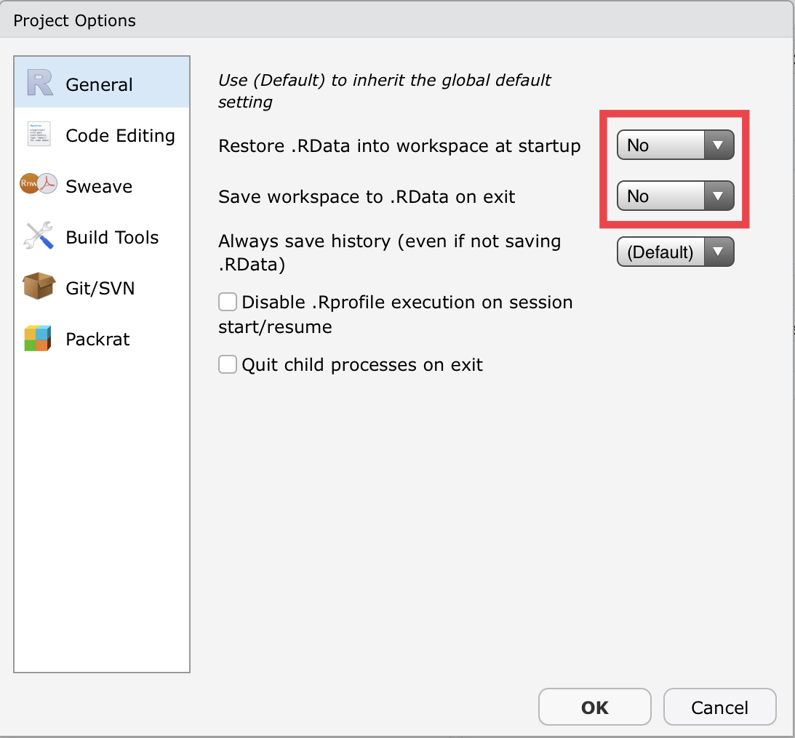

Best Practices
Self-Contained Projects
Data analyses that involve source code should be placed inside a self-contained directory in one of the network folders. Once the analysis is finished, this self-contained folder should be stored in the appropriate analysis/ folder inside the airpollution network folder, if it was not there already.
The names of these project folders should start with your name initials in capital letters followed by an underscore and a short informative name (i.e. SO_physical-activity).
A self-contained folder must contain all the files, data and code necessary to obtain the final results of the analysis. Any resident R script is written assuming that it will be run from a fresh R process with working directory set to the project’s root directory. It creates everything it needs, in its own workspace or folder, and it touches nothing it did not create. This convention guarantees that the project can be moved around on your computer or onto other computers and will still work.
In order to make a project self-contained, it must therefore satisfy the following conditions:
1. File system discipline
All files related to a single project must be in a single folder. This applies to data, code, figures, notes, etc. Depending on project complexity, you may organize files into sub-folders.
Different projects will require different folder structures but some common minimal rules should be set to facilitate file navigation across projects among all team members.
The
data/folder should contain all data files (.csv, .xlsx, etc.). If appropriate, consider dividing data files intodata-raw/anddata-processed/sub-folders.The
R/orsrc/folder should contain all scripts in the analysis.A
README.mdfile should be included in the root of every data analysis project. See next section for details.
A common project structure could be:
.
├── data
│ └── raw-data.csv
├── master-script.R
├── output
│ ├── manuscript.md
│ ├── plot1.png
│ └── plot2.png
├── R
│ ├── fit-models.R
│ └── read-data.R
├── README.md
├── reports
│ └── exploratory-report.Rmd
└── SO_my-analysis.RprojNote that there is a file with the extension .Rproj. This file is created automatically by RStudio when you create an RStudio project. It helps RStudio know that this folder is a project and that the working directory of the associated R session should be the root of this folder. See Projects in Practice for more details.
Other common folders inside of projects are figs/ for figures meant to be shared, documents/ for relevant papers, or reports/ for exploratory data analysis reports.
2. Working directory intentionality
When working on Project A, the working directory must be set to Project A’s root folder. Moreover, every time you open a project, it should start in a fresh R session to avoid any interactions with code you might have run beforehand. Please also note that rm(list = ls()) does not make a fresh R session.
Ideally, this is achieved via development workflow and tooling, not by placing calls to setwd() with absolute paths into the code. I strongly recommend using an Integrated Development Environment (IDE) that supports a project-based workflow. This eliminates the tension between your development convenience and the portability of the code. More details in the next section.
A consequence of this approach is that you should never save your workspace to .RData on exit. This can be disabled by default in RStudio’s Global and Project Options.


3. File path discipline
No absolute paths should appear in your scripts. Absolute paths are specific to your machine. That is why setting your working directory by baking setwd("C:\Users\sergio\path\that\only\I\have") into your scripts will not work in other computer. If you change computers or someone else tries to run your analysis on her machine, the code will not work.
All paths must be relative to the project’s root folder. That is why we need to include all the necessary files inside our project’s folder. With this setup, we can move the project folder to different folders in our computer, or even to different computers entirely.
One last issue to note regarding file paths is that the syntax will be different in different operating systems, even for relative paths. The {here} package provides a simple way to wrap file paths so that they work across any operating system and integrates very smoothly into this project-oriented workflow.
Projects in practice
Using RStudio
To create a new project use the Create Project command (available on the Projects menu and on the global toolbar). You can create an RStudio project in a brand new directory or in an existing directory where you already have R code and data. This creates a project file (with an .Rproj extension) within the project directory that identifies this folder as the root folder of your project.
There are several ways to open an existing project:
Using the Open Project command (available from both the Projects menu and the Projects toolbar) to browse for and select an existing project file (e.g. MyProject.Rproj).
Selecting a project from the list of most recently opened projects (also available from both the Projects menu and toolbar).
Double-clicking on the project file within the system shell (e.g. Windows Explorer, OSX Finder, etc.).
When opening an RStudio project, RStudio starts a fresh R session and sets the current working directory to the root of the project, so there is no need to call setwd() yourself.
See this tutorial for more detailed instructions.
Using the {usethis} package
The {usethis} R package provides a set of functions to create and manage R projects interactively. They do not need to be RStudio projects.
Useful functions to be run interactively in the R command line:
Create a new project with
usethis::create_project()and the absolute path where you want to create the project as the argument.Open an existing project with
usethis::proj_activate()and the absolute path of the project as argument.
Using other IDE
RStudio may not work well when working remotely with the ISGlobal servers. Other IDE options for programming with R are VScode and Emacs + ESS, which allow running R on remote servers over SSH but are more difficult to set up and use. You can use the {usethis} package to create and manage R projects with these IDEs.
README File
All data analysis projects should contain a README file that helps collaborators, as well as future you, understand what the project does and how it does it. Ideally, this file should be a Markdown document (README.md) or any other plain text file (.txt, .org).
The README file should contain at least the following information:
Author/s: Who wrote the project.
Overview: A paragraph or two explaining the main objectives of the project.
Project structure: How files are organized inside the project.
Reproducibility: Instructions on how to independently obtain the results.
Master Script
A master script should be provided at the root of the project which produces the final results of the analysis.
Instead of runing the code in each script “manually” and saving the results, you should have a single master script that orchestrates the whole process, thus making sure that all the results are in-sync. Moreover, a master script can help a colleague looking at your analysis understand how to reproduce your results.
There are a few options but a bare-bones approach can be to create a separate script that sources each of your analysis scripts in the right order.
## master-script.R at the root of your project
library(tidyverse)
library(mgcv)
source("R/read-data.R")
source("R/fit-models.R")
source("R/create-tables.R")
source("R/create-figures.R")There are more sophisticated and helpful ways to provide a master script. Check the targets R package and GNU Makefile.
File Names
Three principles for file names:
- Machine readable:
- Avoid spaces, punctuation, accented characters
- Case sensitive, i.e.
foo.csv != Foo.csv
- Human readable:
- Easy to figure out what something is, based on its name
- Plays well with default ordering:
- Left-pad numbers with 0, i.e.
01_read-data.Rinstead of1_read-data.R - Use the ISO 8601 standard for dates, i.e.
YYYY-MM-DD_report.Rmd
- Left-pad numbers with 0, i.e.
Code Style
Choose a code style and be consistent. See this or this for some common style guides. One rule that can greatly improve readability is not to exceed 80 characters in any of the lines of your script.
Package Version Management
You can use the renv R package to document and reproduce the package versions you used in your analysis.
The general workflow is:
Develop your analysis as normal, installing and removing R packages as they are needed for the project.
Call
renv::snapshot()to save the state of the project library to the lockfile (calledrenv.lock) once you think the analysis is done.Call
renv::restore()to restore the state of the project library.
For further details check renv’s documentation.
Version Control
Use git and GitHub for version control whenever possible. This allows to track all changes in the code and revert to a previous state in case of trouble. More importantly, it can make sharing and collaborating with others much easier.
If you use GitHub, include the repository URL in the README file.
If you are new to version control, you can get started by reading Happy Git and GitHub for the useR.